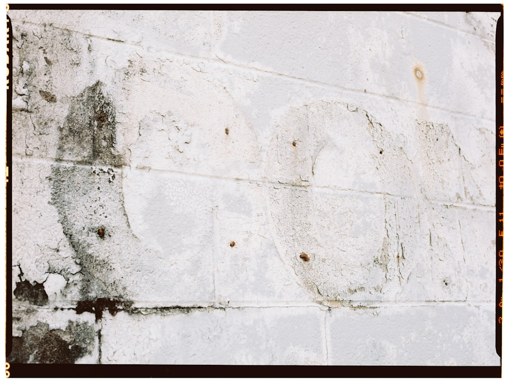

Whether the water came from a storm, an overflowing river, a backed-up sewer, a failed sump pump or a burst plumbing line, flood damage needs a trained crew right away. Floodwater is almost always rated Category 2 (gray water) or Category 3 (black water), so it carries bacteria, contaminants and possibly hazardous material that can make people seriously ill. For flood emergencies anywhere in Nampa, Nampa Restoration is available 24/7 to extract the water, disinfect affected areas and bring the property back safely.
Cleanup opens with rapid extraction: truck-mounted units and submersible pumps that pull thousands of gallons an hour out of the building. With the standing water gone, our IICRC-certified technicians check the contamination level and apply the right sanitizing steps, including antimicrobial treatment, HEPA air filtration and disinfection of every affected surface. Anything unsalvageable comes out and is hauled off correctly, including wet insulation, drywall that took in contaminated water and waterlogged carpet padding.
After extraction and sanitizing, we set up commercial drying equipment, including LGR (low-grain refrigerant) dehumidifiers and high-velocity air movers, to dry the structure of your property thoroughly. Our crew returns daily, using thermal imaging and calibrated meters to track moisture until the structure is completely dry and mold growth is prevented. From start to finish we document each step for your insurance claim, with the moisture maps, equipment logs, photos and scope-of-work reports adjusters ask for.

Maintenance Tips for Flood Cleanup
A little prevention goes a long way in avoiding expensive restoration emergencies. Here are our expert recommendations:
- Check that grading on all sides of the house carries water away from the foundation
- Add a sump pump with battery backup, since power outages and storms tend to arrive together
- Look into a flood insurance policy, including when your home sits outside a mapped flood zone
- Debris in a gutter or storm drain blocks proper flow, so clean them out regularly
- Coat basement walls with waterproofing and seal any cracks in the foundation
- Add downspout extensions so roof water empties well away from the foundation
Flood Cleanup Issues? We Can Help.
Get a free estimate from our expert team today.
Get Help: (470) 852-9436Flood Cleanup: DIY or Professional?
Some simple tasks are suitable for DIY, but most water damage work benefits from professional tools, training, and experience. Here's a comparison:
| Factor | DIY Approach | Professional Service |
|---|---|---|
| Hidden Damage | No way to see damage behind walls | Hidden damage traced with meters and thermal imaging |
| Insurance Claims | Thin records can lower your payout | Full records ready for your adjuster |
| Contaminated Materials | Wet drywall and padding often left in place | Proper tear-out and disposal of contaminated materials |
| Mold Prevention | High mold risk within 24 to 48 hours | Complete drying to IICRC standards prevents mold |
| Extraction Speed | Slow going with buckets and wet vacs | Industrial pumps clear thousands of gallons an hour |
Flood Cleanup: What Homeowners Ask
Our Flood Cleanup Process
We follow a proven process to ensure every job is completed to the highest standards. Here's what you can expect when you choose Nampa Restoration:
Emergency Dispatch
Reach us at (470) 852-9436, 24/7. Our flood response team heads out with truck-mounted extraction equipment, industrial pumps and protective gear to start emergency water removal.
Pumping Out Water and Debris
All standing water from the flood is pumped out with truck-mounted and submersible equipment. Our crew carefully clears waterlogged debris, damaged belongings and contaminated material, documenting it as we go.
Sanitization & Antimicrobial Treatment
EPA-registered antimicrobials go on each surface the floodwater touched. Floors, walls and the structure itself are sanitized as air scrubbers with HEPA filters capture airborne contaminants.
Drying, Monitoring & Restoration
We bring the structure down to industry drying standards with commercial air movers and dehumidifiers. We monitor daily until moisture goals are met, then complete all necessary repairs and reconstruction.
Not Sure What You Need?
Call Nampa Restoration to discuss your flood cleanup needs with a IICRC-certified technician.
Call (470) 852-9436 NowWarning Signs for Flood Cleanup
Recognizing the warning signs early can save you time, money, and prevent significant damage to your property. Watch for these telltale signs that professional help is needed:
- Flooring that squelches when you walk on it and walls damp to the touch
- An overflowing washing machine, dishwasher or water heater
- Receding water that leaves muddy residue and debris behind
- Water pooled on any floor of the building, no matter where it came from
- Rainwater getting inside through a roof or wall damaged by a storm
- Water coming in through foundation cracks, window wells or door thresholds
- Heavy rainfall, a dead sump pump and water spreading across the basement
Act Before It Gets Worse
Many water damage problems start small but can escalate quickly into costly emergencies. If you notice any of these signs, contact Nampa Restoration at (470) 852-9436 for a prompt evaluation.
Why Professional Flood Cleanup Matters
Flood cleanup is far more than pumping out standing water. Chemicals, bacteria, sewage and other contamination ride in with the flood and create real health dangers. Protecting your family from E. coli, hepatitis and similar waterborne illness takes proper containment, correct use of protective equipment (PPE) and proven sanitizing methods, all things professional teams train for.
Beyond the health concerns, a poor flood cleanup often leaves hidden moisture that turns into severe mold growth within days. Professional technicians use moisture meters, thermal imaging and psychrometric calculations to make sure every affected area, including wall cavities, subfloors and framing, reaches an acceptable drying standard. This scientific approach to drying is the only reliable way to prevent secondary damage that can cost thousands more to fix.
Schedule Your Flood Cleanup Service
The sooner you call, the sooner we can help. Reach Nampa Restoration for same-day service.
Call (470) 852-9436 Now